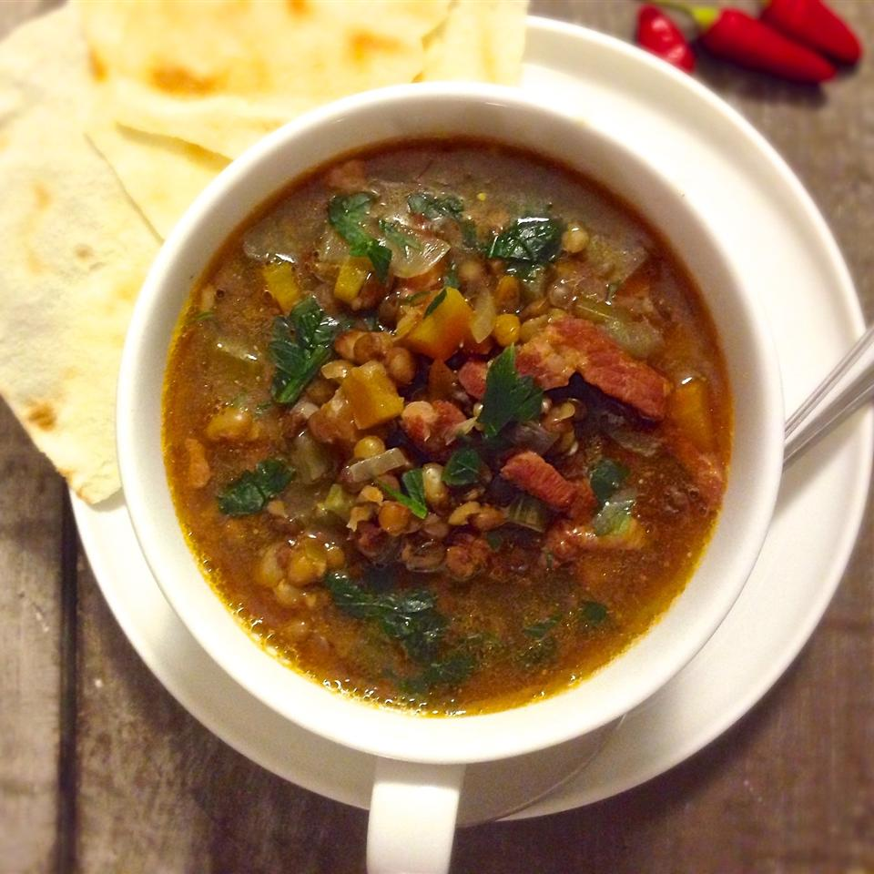

Hearty Lentil Soup with Ham

A delicious soup that will warm you down to your toes in winter.
The dish may be topped with grated Parmesan cheese and served with crusty
French bread.
Ingredients
- 1 (32 ounce) carton chicken broth
- 2 cups water
- 2 carrots, chopped
- 2 stalks celery, chopped
- 1 large onion, chopped
- 2 cloves garlic, minced
- 2 tablespoons red wine vinegar
- 1 1/2 cups cubed fully cooked ham
- 1 teaspoon dry mustard
- 1 teaspoon salt
- 1/2 teaspoon ground black pepper
Directions
- Stir chicken broth, water, carrots, celery, onion, lentils, garlic,
and red wine vinegar together in a large stockpot; bring to a boil,
reduce heat to low, and simmer until carrots are tender, about 10
minutes.
- Stir in ham, mustard, salt, and pepper; simmer until lentils are
tender, 20 to 30 minutes more.
Tips
For added smoky flavor, add 1 to 2 teaspoons paprika.
Return to Main Menu